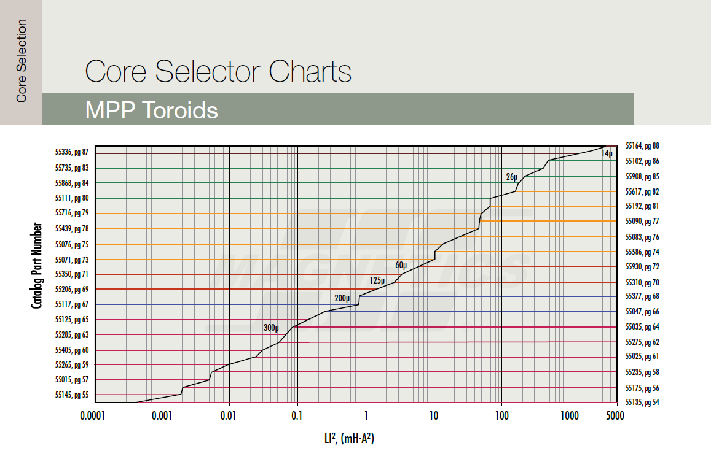

Disciplina: Eletrônica de Potência II
Aluno: Mateus Salgado Barboza Costa
Professor: Joabel Moia
Data: 21/09/2026
Este relatório apresenta o projeto do indutor de saída do conversor Buck proposto na aula Projeto de Indutores para Alta Frequência. O indutor foi projetado de duas formas: com a planilha SMath da disciplina e núcleo de ferrite Thornton, e com a planilha Inductor Design Tool da Magnetics e núcleo desse fabricante. Ao final, os dois resultados são comparados.
| Especificação do conversor | Valor |
|---|---|
| Tensão de entrada, Vi | 36 V |
| Tensão de saída, Vo | 12 V |
| Potência de saída, Po | 100 W |
| Frequência de comutação, Fs | 100 kHz |
| Ondulação de corrente no indutor | ΔIL = 10 % da corrente média |
| Capacitância de saída, C | 100 µF |
Segundo a aula, o projeto de um indutor depende da frequência de operação, da corrente, do regime de trabalho e do material do núcleo. Por isso, os dois projetos seguiram a mesma sequência de passos para elementos magnéticos em alta frequência:
O conversor opera em modo de condução contínua e em regime permanente, e os componentes foram considerados ideais. Pela aula, a ondulação de corrente no Buck é ΔILo = (Vi − Vo)·D/(Lo·Fs). Isolando Lo para a ondulação especificada:
| Esforço no indutor | Valor |
|---|---|
| Indutância, Lo | 96 µH |
| Corrente média, ILo | 8,333 A |
| Ondulação pico a pico, ΔILo | 0,833 A |
| Corrente de pico, ILop | 8,75 A |
| Corrente mínima, ILo − ΔILo/2 | 7,917 A |
| Corrente eficaz, ILoef | 8,337 A |
| Energia armazenada, L·ILop2 | 7,35 mH·A² |
Como a corrente mínima é positiva, o modo de condução contínua se confirma. A corrente no indutor é praticamente contínua: a ondulação é só 10 % do valor médio. Isso orienta todo o projeto, porque a variação de fluxo no núcleo é pequena e o que dimensiona o indutor é o valor de pico da corrente (saturação) e o seu valor eficaz (aquecimento do cobre).
Este projeto seguiu a planilha Projeto Físico do Indutor de Alta Frequência (SMath) da disciplina, com os parâmetros adotados na aula. A memória de cálculo completa da planilha está no Apêndice A.
Adotou-se ferrite Thornton tipo IP, com densidade de fluxo máxima B = 0,35 T. Também foram adotados fator de enrolamento k = 0,7 e densidade de corrente J = 450 A/cm². Como o fluxo acompanha a corrente, a variação de densidade de fluxo é proporcional à ondulação:
O tamanho mínimo do núcleo foi calculado pelo produto de áreas:
Na tabela de núcleos Thornton da aula, o E-30/7 (0,48 cm4) não atende. O menor núcleo com produto de áreas suficiente é o EE-30/14 (Ae = 1,20 cm², Aw = 0,85 cm², lt = 6,7 cm, Ve = 8,0 cm³, AeAw = 1,02 cm4), que foi o escolhido.
Com 20 espiras, a densidade de fluxo no pico de corrente é exatamente o limite de 0,35 T. O entreferro total de 0,63 mm pode ser feito com um espaçador de cerca de 0,31 mm entre as duas metades do núcleo, já que o fluxo atravessa o espaçador duas vezes. O valor final deve ser ajustado na montagem, medindo a indutância.
Em 100 kHz, o efeito pelicular concentra a corrente na superfície do condutor. Por isso, a aula limita o diâmetro do fio a duas vezes a profundidade de penetração:
O fio 26 AWG (diâmetro de cobre de 0,040 cm e Acu = 0,001287 cm²) respeita esse limite. A seção de cobre necessária, S = ILoef/J = 0,01853 cm², é maior que a de um único fio. A razão S/Acu dá 14,4, então foram adotados 15 fios em paralelo, com densidade de corrente real de 432 A/cm².
O fator de ocupação é menor que 1, então o enrolamento cabe no carretel. Mesmo com a margem do exemplo da aula (Aw,nec/0,7), o fator fica em 0,84, ainda viável.
| Grandeza | Expressão | Resultado |
|---|---|---|
| Perdas no núcleo | ΔB2,4·(KH·Fs + KE·Fs²)·Ve, com KH = 4·10−5 e KE = 4·10−10 | 18,2 mW |
| Resistência do enrolamento (100 °C) | R = N·ρ26·lt/nfios = 20 × 0,001789 × 6,7 / 15 | 16,0 mΩ |
| Perdas no cobre | R·ILoef² | 1,111 W |
| Perdas totais | Pnúcleo + Pcobre | 1,129 W |
| Resistência térmica | Rt = 23·(AeAw)−0,37 | 22,8 °C/W |
| Elevação de temperatura | ΔT = Rt·Ptotal | 25,8 °C |
As perdas no núcleo são pequenas porque a variação de fluxo é de apenas 0,033 T. Quase toda a perda (98 %) está no cobre, e a elevação de 25,8 °C é aceitável para o material e o carretel.
Este projeto seguiu a aba Toroid Design da planilha Inductor Design Tool da Magnetics, que trabalha com núcleos toroidais de pó. Os dados de entrada foram: L = 0,096 mH em plena carga, corrente CC de 8,33 A, ondulação de 0,833 A pico a pico, frequência de 100 kHz e temperatura ambiente de 25 °C. O painel de resultados da planilha está no Apêndice B.
Escolheu-se o material MPP (Molypermalloy), que tem as menores perdas no núcleo entre os pós da Magnetics e é indicado para 100 kHz. Nos núcleos de pó, o entreferro fica distribuído no próprio material. Por isso não há entreferro discreto, mas a permeabilidade cai com a intensidade de campo H, ou seja, com a corrente CC.
A Magnetics seleciona o núcleo pela energia armazenada. A planilha calculou LI² = 0,096 × (8,33 + 0,833/2)² = 7,34 mH·A². No gráfico de seleção de toroides MPP (Figura 1), esse valor indica o núcleo 55930 (125µ, diâmetro externo de 27,7 mm).

A planilha calcula as espiras sem carga, N0 = √(L/AL,min), usando o AL mínimo (−8 % de tolerância). Em seguida, corrige esse valor pela queda de permeabilidade com o campo H = N·I/le. Para o 55930, com 42 espiras e fio 13 AWG, os resultados foram:
Como o 55930 não garante a indutância especificada, passou-se para o tamanho seguinte do mesmo material e permeabilidade, o 55548 (MPP 125µ, diâmetro externo de 33,7 mm). Nele, a planilha resulta em 41 espiras. O caminho magnético é maior (le = 8,14 cm contra 6,35 cm), então o campo no pico cai para 44,1 A/cm e a permeabilidade fica em 50 % da inicial. A indutância mínima em plena carga passa a ser 98,4 µH, acima do especificado. Os valores do 55548 foram obtidos com as equações da aba Toroid Design, as mesmas que produziram os resultados do 55930.
Foram adotados 2 fios 16 AWG em paralelo. A seção de cobre fica próxima à de um fio 13 AWG, mas o conjunto é mais fácil de enrolar no toroide. O fator de enrolamento resulta em 0,41, dentro dos cerca de 40 % recomendados pela Magnetics, com o enrolamento distribuído em 2 camadas.
A profundidade de penetração calculada pela planilha é de 0,21 mm, e o fio 16 AWG (Ø 1,29 mm) é mais grosso que 2δ. Mesmo assim, ele é adequado neste caso, porque a corrente é quase toda contínua: a componente alternada eficaz é de apenas 0,24 A, contra 8,33 A CC. A planilha aplica RCA = 2,5·RCC a essa parcela, o que resulta em só cerca de 2 mW de perda adicional. O critério da aula (d ≤ 2Δ para toda a corrente) é mais conservador e explica os 15 fios finos do Projeto 1.
| Parâmetro | 55930, 42 esp., 1 × 13 AWG | 55548, 41 esp., 2 × 16 AWG |
|---|---|---|
| AL (±8 %) | 157 nH/esp² | 127 nH/esp² |
| Diâmetro externo × diâmetro interno × altura (núcleo) | 27,7 × 14,1 × 12,0 mm | 33,7 × 19,4 × 11,5 mm |
| le / Ae / Ve | 6,35 cm / 0,654 cm² / 4,15 cm³ | 8,14 cm / 0,656 cm² / 5,34 cm³ |
| H de pico / permeabilidade restante | 57,9 A/cm / 35,2 % | 44,1 A/cm / 50,1 % |
| L mínima em plena carga (8,75 A) | 89,7 µH – não atende | 98,4 µH – atende |
| Fator de enrolamento / camadas | 0,76 / 3 | 0,41 / 2 |
| Resistência CC (20 °C) | 15,1 mΩ | 13,3 mΩ |
| Perdas no núcleo | 29,3 mW | 47,7 mW |
| Perdas no cobre | 1,047 W | 0,926 W |
| Perdas totais | 1,076 W | 0,973 W |
| Elevação de temperatura | 14,9 °C | 12,2 °C |
O núcleo maior tem perdas no núcleo um pouco maiores, por ter mais volume, mas perdas no cobre menores: as espiras são mais curtas e há mais cobre em paralelo. A maior superfície do núcleo também ajuda a dissipar o calor. O resultado é 0,97 W de perdas e elevação de 12,2 °C.
| Item | Projeto 1 – Thornton (SMath) | Projeto 2 – Magnetics (Design Tool) |
|---|---|---|
| Indutância de projeto | 96 µH | 96 µH (mín. 98,4 µH em plena carga) |
| Núcleo | EE-30/14 Thornton, 1 par | Toroide Magnetics 55548 (C055548A2) |
| Material | Ferrite Thornton tipo IP | Pó MPP, µ = 125 |
| Dados geométricos | Ae = 1,20 cm², Aw = 0,85 cm², Ve = 8,0 cm³ | Ae = 0,656 cm², Wa = 2,97 cm², Ve = 5,34 cm³ |
| Número de espiras | 20 | 41 |
| Entreferro | 0,63 mm total (≈0,31 mm de espaçador) | Distribuído no material |
| Fio | 15 × 26 AWG em paralelo | 2 × 16 AWG em paralelo |
| Seção de cobre total | 0,0193 cm² | 0,0294 cm² |
| Densidade de corrente | 432 A/cm² | 283 A/cm² |
| Ocupação da janela | Kocup = 0,59 | Fator de enrolamento = 0,41 |
| Resistência do enrolamento | 16,0 mΩ (100 °C) | 13,3 mΩ (20 °C) |
| Perdas no núcleo | 18,2 mW | 47,7 mW |
| Perdas no cobre | 1,111 W | 0,926 W |
| Perdas totais | 1,129 W | 0,973 W |
| Elevação de temperatura | 25,8 °C | 12,2 °C |
Os dois indutores de 96 µH são viáveis para o Buck de 100 W em 100 kHz. Seguindo os passos da aula, o projeto com ferrite Thornton levou ao núcleo EE-30/14 com 20 espiras de 15 × 26 AWG e entreferro de 0,63 mm, com ocupação da janela de 0,59 e elevação de temperatura de 25,8 °C. O grande número de fios em paralelo vem do critério de profundidade de penetração para 100 kHz.
No projeto com a ferramenta da Magnetics, a seleção inicial pelo gráfico LI² (55930) não garantia a indutância em plena carga quando considerada a tolerância do AL e a queda de permeabilidade com a corrente CC. Um tamanho acima, o toroide 55548 (MPP 125µ) com 41 espiras de 2 × 16 AWG atende à especificação, com 0,97 W de perdas e elevação de 12,2 °C. Esse caso mostra que, em núcleos de pó, é necessário verificar a indutância na corrente máxima e não apenas na condição sem carga.
Nos dois projetos, as perdas no cobre dominam (mais de 95 % do total). A ondulação de corrente é pequena, então a variação de fluxo e as perdas no núcleo também são. O dimensionamento é definido principalmente pela corrente de pico, que limita a saturação, e pela corrente eficaz, que define o aquecimento do enrolamento.
Regiões da planilha Projeto Físico do Indutor de Alta Frequência (Versão 01), na ordem em que aparecem, com os resultados calculados pela SMath Studio (4 casas decimais). As linhas em destaque são os valores de entrada deste projeto.
Painel de entradas e resultados da aba Toroid Design da planilha Inductor Design Tool, nas etapas STEP 1 a STEP 4, para o núcleo selecionado inicialmente (55930) e para o núcleo adotado (55548).
| STEP 1 – Design Input | |
|---|---|
| Full Load L | 0,096 mH |
| DC Current | 8,33 A |
| Ripple Current (peak to peak) | 0,833 A |
| Frequency | 100 kHz |
| Stack Cores | 1 |
| Specified Current | 8,33 A |
| Ambient Temperature | 25 °C |
| STEP 2 – Calculated LI² value | |
| LI² (DC + Peak Ripple) = L·(IDC + ΔI/2)² = 0,096 × 8,7465² | 7,344 mH·A² |
| RMS Ripple Current = ΔI/2/1,732 | 0,2405 A |
| Skin depth = 66,3/√f | 0,2097 mm |
| STEP 3 e STEP 4 – Design Output | 55930 (seleção inicial) | 55548 (adotado) |
|---|---|---|
| Part Number / Material / Permeability | C055930A2 / MPP / 125 | C055548A2 / MPP / 125 |
| Core OD × ID × HT (mm) | 27,69 × 14,1 × 12 | 33,66 × 19,4 × 11,5 |
| Core AL (nH/T², ±8 %) | 157 | 127 |
| Wire AWG / # of Strands | 13 / 1 | 16 / 2 |
| Number of Turns | 42 | 41 |
| Inductance at No Load | 0,2769 mH | 0,2135 mH |
| Specified Current Inductance (mín.) | 0,0962 mH | 0,1038 mH |
| Inductance at Full Load (mín.) | 0,0897 mH | 0,0984 mH |
| % Initial Perm at Max Current | 35,2 % | 50,1 % |
| H at Max Current (A·T/cm) | 57,85 | 44,05 |
| B Peak (ΔB/2) | 11,48 mT | 12,88 mT |
| Core Loss | 0,0293 W | 0,0477 W |
| Copper Loss | 1,0468 W | 0,926 W |
| Total Loss | 1,0760 W | 0,973 W |
| Winding Factor | 0,7646 | 0,406 |
| Number of Layers | 3 | 2 |
| MLT | 54,6 mm | 49,3 mm |
| Total Wire Length | 2293 mm | 2020 mm (por fio) |
| DC Resistance of Winding (20 °C) | 15,05 mΩ | 13,31 mΩ |
| Wound Surface Area | 42,1 cm² | 48,3 cm² |
| Temp Rise = (Ptotal[mW]/SA[cm²])0,833 | 14,9 °C | 12,2 °C |
| Operating Temperature | 39,9 °C | 37,2 °C |
Principais equações da aba Toroid Design: N0 = ⌈√(L/AL,min)⌉, com AL,min = 0,92·AL; H = N·I/le; %µ = 1/(a + b·Hc), com a = 0,01, b = 1,967·10−6 e c = 2,2535 (MPP 125µ); N = ⌈N0/%µ⌉; L = AL,min·%µ·N²; B(H) = [(A + B·H + C·H²)/(1 + D·H + E·H²)]0,5; Pnúcleo = 53,05·Bpk2,06·fkHz1,56·Ve [mW]; Pcu = IDC²·RDC + Irip,rms²·2,5·RDC.